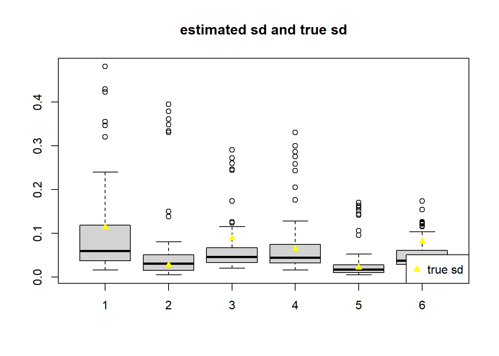
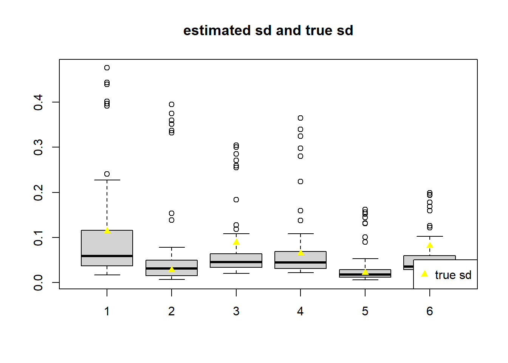

Last updated: 2021-09-22
Checks: 7 0
Knit directory: deconference/
This reproducible R Markdown analysis was created with workflowr (version 1.6.2). The Checks tab describes the reproducibility checks that were applied when the results were created. The Past versions tab lists the development history.
Great! Since the R Markdown file has been committed to the Git repository, you know the exact version of the code that produced these results.
Great job! The global environment was empty. Objects defined in the global environment can affect the analysis in your R Markdown file in unknown ways. For reproduciblity it’s best to always run the code in an empty environment.
The command set.seed(20200403) was run prior to running the code in the R Markdown file. Setting a seed ensures that any results that rely on randomness, e.g. subsampling or permutations, are reproducible.
Great job! Recording the operating system, R version, and package versions is critical for reproducibility.
Nice! There were no cached chunks for this analysis, so you can be confident that you successfully produced the results during this run.
Great job! Using relative paths to the files within your workflowr project makes it easier to run your code on other machines.
Great! You are using Git for version control. Tracking code development and connecting the code version to the results is critical for reproducibility.
The results in this page were generated with repository version d6a26ed. See the Past versions tab to see a history of the changes made to the R Markdown and HTML files.
Note that you need to be careful to ensure that all relevant files for the analysis have been committed to Git prior to generating the results (you can use wflow_publish or wflow_git_commit). workflowr only checks the R Markdown file, but you know if there are other scripts or data files that it depends on. Below is the status of the Git repository when the results were generated:
Ignored files:
Ignored: .DS_Store
Ignored: .Rhistory
Ignored: .Rproj.user/
Ignored: data/.DS_Store
Ignored: output/.DS_Store
Untracked files:
Untracked: analysis/simu_X_from_real.Rmd
Untracked: analysis/simu_check_data_generation.Rmd
Untracked: analysis/simu_correlation_centering.Rmd
Untracked: data/MuSiC/
Untracked: data/V.rds
Untracked: data/X.rds
Untracked: data/gtex/
Untracked: data/neuron/
Untracked: data/pancreas/
Untracked: output/check_coverage_weight_neuron/
Untracked: output/check_coverage_weight_xin/
Untracked: output/geneCorMat_gtexpancreas.rds
Untracked: output/geneCor_gtexpancreas_logtpm.rds
Untracked: output/geneCor_gtexpancreas_tpm.rds
Untracked: output/geneCor_gtexpancreas_tpm.rds.zip
Untracked: output/manuscript/
Untracked: output/neuron/
Untracked: output/simu_corr_xin_G1000_corband10.rds
Untracked: output/simu_corr_xin_G1000_corband100.rds
Untracked: output/simu_corr_xin_G1000_corband5.rds
Untracked: output/simu_corr_xin_G1000_corband50.rds
Untracked: output/simu_corr_xin_G1000_corpair100.rds
Untracked: output/simu_corr_xin_G1000_corpair1000.rds
Untracked: output/simu_corr_xin_G1000_corpair10000.rds
Untracked: output/simu_corr_xin_G1000_corpair1e5.rds
Untracked: output/simu_corr_xin_G1000_corpair5000.rds
Untracked: output/simu_correlation_checkassumption_betahat.rds
Untracked: output/simu_correlation_checkassumption_truebeta.rds
Untracked: output/simu_correlation_checkavariance_betahat_d500_xin_hc3.rds
Untracked: output/simu_correlation_checkavariance_betahat_d500_xin_hc3_only_pos_ecov.rds
Untracked: output/simu_correlation_checkavariance_betahat_d500_xin_jack.rds
Untracked: output/simu_correlation_checkavariance_betahat_d500_xin_trueb.rds
Untracked: output/simu_correlation_checkavariance_betahat_d50_xin_est_cor_100bulkforcor_alpha01.rds
Untracked: output/simu_correlation_checkavariance_betahat_d50_xin_est_cor_100bulkforcor_alpha05.rds
Untracked: output/simu_correlation_checkavariance_betahat_d50_xin_est_cor_100bulkforcor_alpha05_addjack.rds
Untracked: output/simu_correlation_checkavariance_betahat_d50_xin_est_cor_100bulkforcor_thresh.rds
Untracked: output/simu_correlation_checkavariance_betahat_d50_xin_est_cor_100indi.rds
Untracked: output/simu_correlation_checkavariance_betahat_d50_xin_est_cor_10indi.rds
Untracked: output/simu_correlation_checkavariance_betahat_d50_xin_est_cor_10indi_alpha03.rds
Untracked: output/simu_twosample_baron_nb10.rds
Untracked: output/simu_twosample_seger_nb10.rds
Untracked: output/simu_twosample_xin_nb10.rds
Untracked: output/simu_twosample_xin_nb50.rds
Unstaged changes:
Modified: analysis/MuSiC.Rmd
Modified: analysis/check_coverage_adding_weights_neuron_real2.Rmd
Modified: analysis/geneCor_gtexpancreas.Rmd
Modified: analysis/gene_weights.Rmd
Modified: analysis/gene_weights_addmusic.Rmd
Modified: analysis/multiref_random_nondiag.Rmd
Modified: analysis/neuron_simu_MLN.Rmd
Modified: analysis/simu_correlation_checkvariance.Rmd
Modified: analysis/xin_16_indi.Rmd
Modified: code/deconference_estfunc.R
Note that any generated files, e.g. HTML, png, CSS, etc., are not included in this status report because it is ok for generated content to have uncommitted changes.
These are the previous versions of the repository in which changes were made to the R Markdown (analysis/check_coverage_adding_weights_neuron_real_faster.Rmd) and HTML (docs/check_coverage_adding_weights_neuron_real_faster.html) files. If you’ve configured a remote Git repository (see ?wflow_git_remote), click on the hyperlinks in the table below to view the files as they were in that past version.
| File | Version | Author | Date | Message |
|---|---|---|---|---|
| Rmd | d6a26ed | Dongyue Xie | 2021-09-22 | wflow_publish(“analysis/check_coverage_adding_weights_neuron_real_faster.Rmd”) |
We make the calculation faster by stacking the score matrix of each individual denoted as \(B\) and calculate \(B^TAB\) where \(A\) is the \(0-1\) correlation matrix.
When only adding empirically positively correlated pairs, we take average of the individual matrix \(A\).
indis_ref = readRDS('data/neuron/indis_ref_12400by6by97.rds')
rmse = function(x,y){sqrt(mean((x-y)^2))}source('code/deconference_main.R')
source('code/simulation/simu_correlation_ult.R')b1 = c(0.1,0.1,0.15,0.15,0.2,0.3)
b2 = c(0.1,0.15,0.25,0.3,0.1,0.1)
b2=b1
n = dim(indis_ref)[3]
n_ref = 11
n_bulk = n-n_ref
b = cbind(b1%*%t(rep(1,n_bulk/2)),b2%*%t(rep(1,n_bulk/2)))
set.seed(12345)
ref.idx = sort(sample(1:n,n_ref))
G = dim(indis_ref)[1]
K = dim(indis_ref)[2]
gene_names = dimnames(indis_ref)[[1]]
X_array_ref = indis_ref[,,ref.idx]
X_array_bulk = indis_ref[,,-ref.idx]
X = apply(X_array_ref,c(1,2),mean,na.rm=TRUE)
V = t(apply(X_array_ref,c(1),function(z){(cov(t(z),use = 'complete.obs'))}))/n_ref
V.temp = t(apply(X_array_ref,c(1),function(z){(cov(t(z),use = 'complete.obs'))}))
fit.vash = vashr::vash(sqrt(rowSums(V.temp)),df=n_ref-1)
w = 1/(fit.vash$sd.post)^2
summary(w) Min. 1st Qu. Median Mean 3rd Qu. Max.
0.0000 0.1844 0.9307 2.9721 3.5059 32.5023 bulk_lib_size = 500
mb = lapply(1:n_bulk,function(i){X_array_bulk[,,i]%*%b[,i]})
mb = do.call(cbind,mb)
thetab = apply(mb,2,function(z){z/sum(z)})
true.beta = t(t(b)*c(apply(mb,2,function(z){bulk_lib_size*G/sum(z)})))
y = matrix(rpois(G*n_bulk,bulk_lib_size*G*thetab),nrow=G)
rownames(y) = gene_names
cor.idx = readRDS('data/neuron/gene12400_cor_idx_alpha005.rds')
dim(cor.idx)[1] 25653118 2R01 = sparseMatrix(i = cor.idx[,1],j = cor.idx[,2],dims = c(G,G))
diag(R01) = 1summary_temp = function(fit,b,true.beta){
boxplot(t(fit$p_hat_se),ylim = range(c(fit$p_hat_se,apply(fit$p_hat,1,sd,na.rm=T)),na.rm = T),
main = 'estimated sd and true sd')
lines(apply(fit$p_hat,1,sd),type='p',col='yellow',pch=17)
legend('bottomright',c('true sd'),pch=17,col='yellow')
waldi = (fit$p_hat-b)/fit$p_hat_se
cat('coverage p:')
print(round(rowMeans(abs(waldi)<=1.96,na.rm = T),3))
folds = fit$folds
print(table(folds))
wald_beta = (fit$beta_hat-true.beta)/fit$beta_hat_se
cat('coverage beta:')
print(round(rowMeans(abs(wald_beta)<=1.96,na.rm = T),3))
}fit = readRDS('output/check_coverage_weight_neuron/11ref_jackknife_kmedoids01_10folds_rm_cor_alpha005.rds')
fold10 = fit$folds
fit = readRDS('output/check_coverage_weight_neuron/11ref_jackknife_kmedoids_20folds_alpha005.rds')
fold20 = fit$folds10 folds
fit_10fold = estimation_func2(y=y,X=X,Vg=V,
w=w,hc.type='jackknife_indep',correction=FALSE,
calc_cov=F,verbose=T,
centeringXY=F,
true.beta = NULL,
only.add.pos.res=F,
folds=fold10,
R01 = R01)estimating proportionscalculating covariance matrixperforming delta methodWarning in sqrt(diag(asyV)): NaNs produceddoneWarning in sqrt(diag(covb)): NaNs producedsummary_temp(fit_10fold,b,true.beta)coverage p:[1] 0.767 0.779 0.616 0.788 0.849 0.744
< table of extent 0 >
coverage beta:[1] 0.779 0.814 0.628 0.824 0.802 0.721same result as previous one.
only add positive pairs:
fit_10fold_pos = estimation_func2(y=y,X=X,Vg=V,
w=w,hc.type='jackknife_indep',correction=FALSE,
calc_cov=F,verbose=T,
centeringXY=F,
true.beta = NULL,
only.add.pos.res=T,
folds=fold10,
R01 = R01)estimating proportionscalculating covariance matrixaveraging A over individuals[1] 19449458performing delta methoddonesummary_temp(fit_10fold_pos,b,true.beta)
coverage p:[1] 0.756 0.779 0.547 0.779 0.872 0.756
< table of extent 0 >
coverage beta:[1] 0.779 0.791 0.570 0.767 0.802 0.721do not use average one: 0.872, 0.977, 0.744, 0.895, 1.000, 0.744
20 folds
fit_20fold = estimation_func2(y=y,X=X,Vg=V,
w=w,hc.type='jackknife_indep',correction=FALSE,
calc_cov=F,verbose=T,
centeringXY=F,
true.beta = NULL,
only.add.pos.res=F,
folds=fold20,
R01 = R01)estimating proportionscalculating covariance matrixperforming delta methodWarning in sqrt(diag(asyV)): NaNs produceddoneWarning in sqrt(diag(covb)): NaNs producedsummary_temp(fit_20fold,b,true.beta)coverage p:[1] 0.640 0.942 0.605 0.788 0.791 0.593
< table of extent 0 >
coverage beta:[1] 0.640 0.942 0.628 0.776 0.721 0.593only add positive pairs:
fit_20fold_pos = estimation_func2(y=y,X=X,Vg=V,
w=w,hc.type='jackknife_indep',correction=FALSE,
calc_cov=F,verbose=T,
centeringXY=F,
true.beta = NULL,
only.add.pos.res=T,
folds=fold20,
R01 = R01)estimating proportionscalculating covariance matrixaveraging A over individuals[1] 15880984performing delta methoddonesummary_temp(fit_20fold_pos,b,true.beta)
coverage p:[1] 0.605 0.942 0.593 0.791 0.826 0.605
< table of extent 0 >
coverage beta:[1] 0.640 0.942 0.605 0.767 0.767 0.581do not use average one: 0.814 0.965 0.721 0.907 1.000 0.640
sessionInfo()R version 4.0.3 (2020-10-10)
Platform: x86_64-apple-darwin17.0 (64-bit)
Running under: macOS High Sierra 10.13.6
Matrix products: default
BLAS: /Library/Frameworks/R.framework/Versions/4.0/Resources/lib/libRblas.dylib
LAPACK: /Library/Frameworks/R.framework/Versions/4.0/Resources/lib/libRlapack.dylib
locale:
[1] en_US.UTF-8/en_US.UTF-8/en_US.UTF-8/C/en_US.UTF-8/en_US.UTF-8
attached base packages:
[1] parallel stats4 stats graphics grDevices utils datasets
[8] methods base
other attached packages:
[1] Rfast_2.0.1 RcppZiggurat_0.1.6
[3] Rcpp_1.0.5 Matrix_1.2-18
[5] SingleCellExperiment_1.12.0 SummarizedExperiment_1.20.0
[7] Biobase_2.50.0 GenomicRanges_1.42.0
[9] GenomeInfoDb_1.26.1 IRanges_2.24.0
[11] S4Vectors_0.28.0 BiocGenerics_0.36.0
[13] MatrixGenerics_1.2.0 matrixStats_0.57.0
[15] workflowr_1.6.2
loaded via a namespace (and not attached):
[1] invgamma_1.1 lattice_0.20-41 assertthat_0.2.1
[4] rprojroot_1.3-2 digest_0.6.27 truncnorm_1.0-8
[7] plyr_1.8.6 R6_2.4.1 backports_1.1.10
[10] evaluate_0.14 ggplot2_3.3.2 pillar_1.4.6
[13] vashr_0.99.1 zlibbioc_1.36.0 rlang_0.4.10
[16] rstudioapi_0.11 irlba_2.3.3 whisker_0.4
[19] qvalue_2.22.0 rmarkdown_2.5 splines_4.0.3
[22] stringr_1.4.0 RCurl_1.98-1.2 munsell_0.5.0
[25] mixsqp_0.3-43 DelayedArray_0.16.0 compiler_4.0.3
[28] httpuv_1.5.4 xfun_0.18 pkgconfig_2.0.3
[31] SQUAREM_2020.5 htmltools_0.5.1.1 tidyselect_1.1.0
[34] tibble_3.0.4 GenomeInfoDbData_1.2.4 crayon_1.3.4
[37] dplyr_1.0.5 later_1.1.0.1 bitops_1.0-6
[40] grid_4.0.3 DBI_1.1.0 gtable_0.3.0
[43] lifecycle_1.0.0 git2r_0.27.1 magrittr_2.0.1
[46] scales_1.1.1 stringi_1.5.3 reshape2_1.4.4
[49] XVector_0.30.0 fs_1.5.0 promises_1.1.1
[52] ellipsis_0.3.1 vctrs_0.3.7 generics_0.1.0
[55] tools_4.0.3 glue_1.4.2 purrr_0.3.4
[58] yaml_2.2.1 colorspace_1.4-1 ashr_2.2-47
[61] knitr_1.30